Sanal Makine Nedir?
Sanal Makine nedir? Nasıl Kullanılır?
Sanal makineler gelecek vaad eden bir bağlantı şeklidir. Olay yalnızca internet bağlantısı ve tarayıcı (masaüstü uygulamaları da mevcut...) ile uzak masaüstü mantığı ile uzaktaki bir bilgisayara bağlanmak ve işlem yapmaktan ibaret. Her zaman için kendi bilgisayarımızı kullanamayabiliyoruz. Bu gibi olası durumlarda turbo.net gibi uzak makineler devreye giriyor.
turbo.net nedir?
Herhangi bir bilgisayardan turbo.net'e giriş yapıp isterseniz sublime text'te düzenleme yapın, isterseniz eclipse'de kod yazın. Bunun için herhangi bir kurulum gerekmiyor. Uzaktaki bir sunucudan düşük gecikme süreleri ile dilediğiniz işlemi takılmadan gerçekleştirebilirsiniz.
turbo.net nasıl kullanılır?
Yalnızca birkaç adımda kayıt olarak işlem yapmaya başlayabilirsiniz. Aşağıdaki adımları takip ederek başlayın!
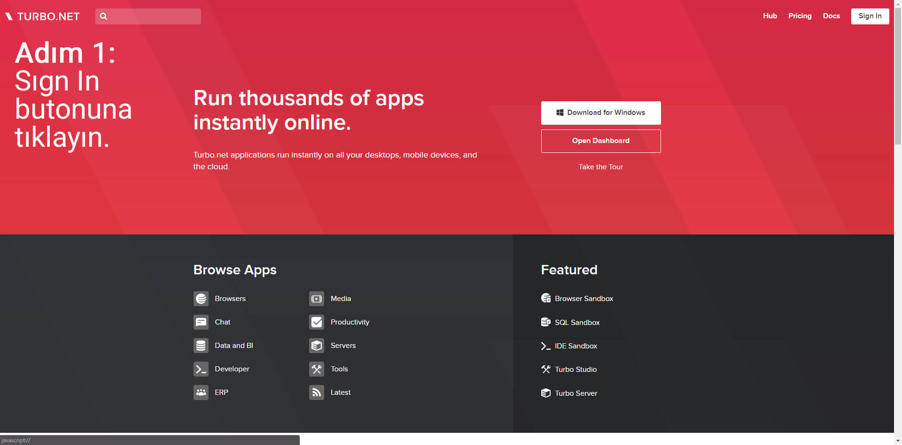 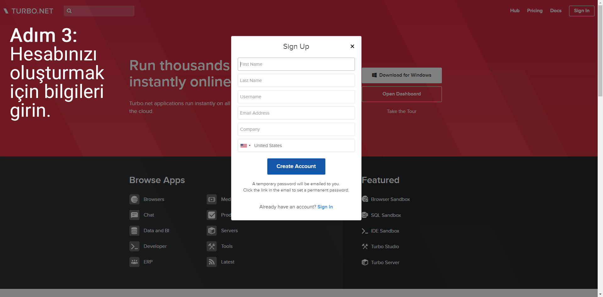
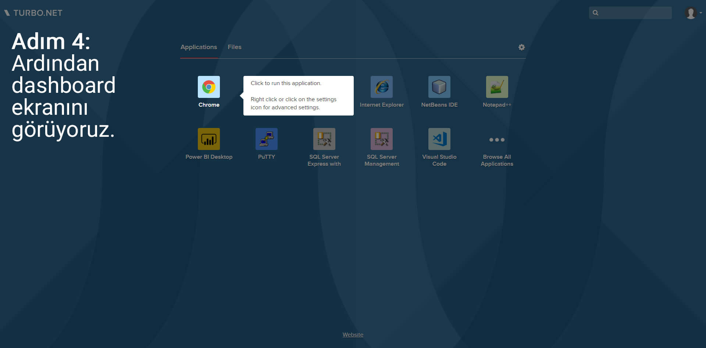
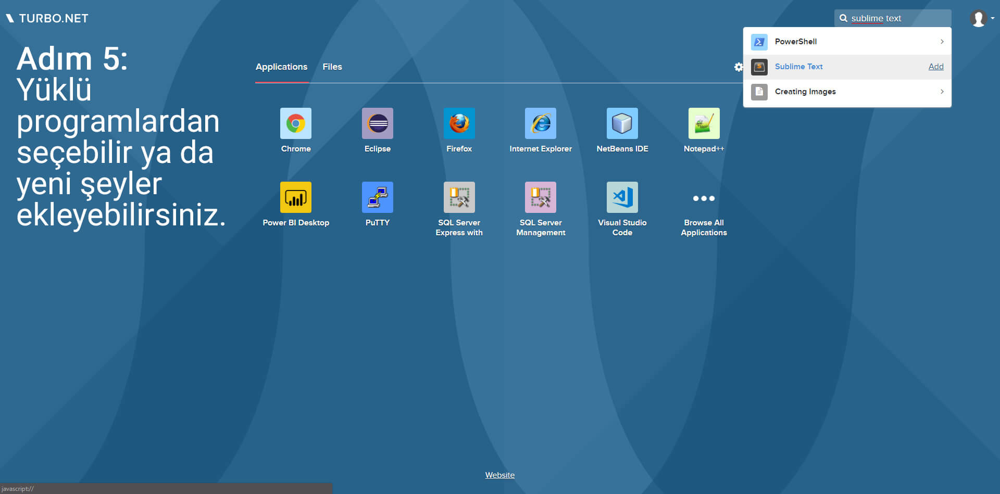
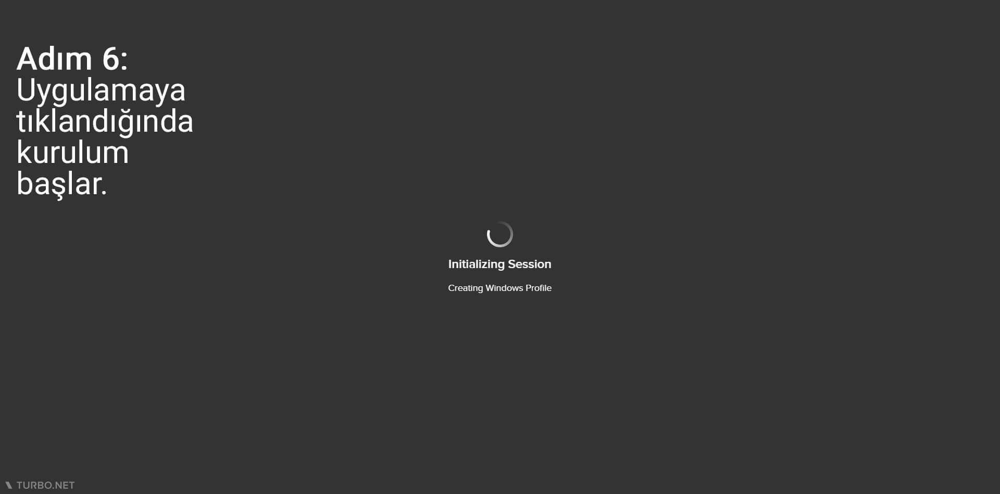
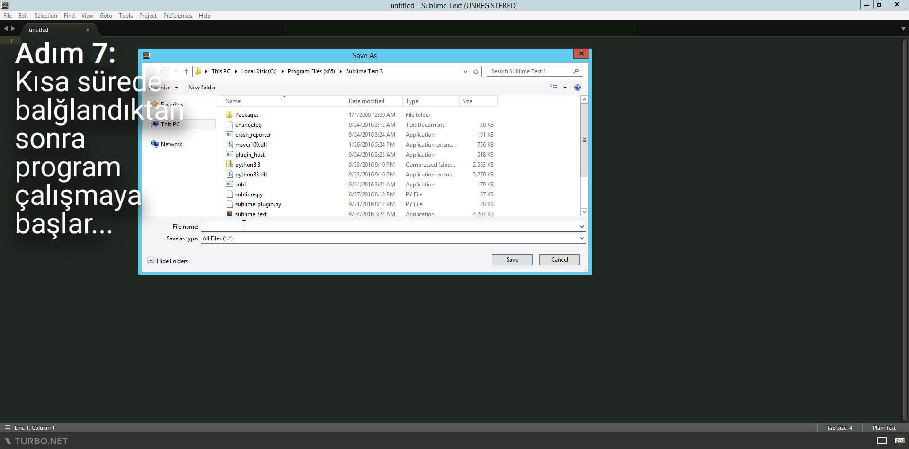
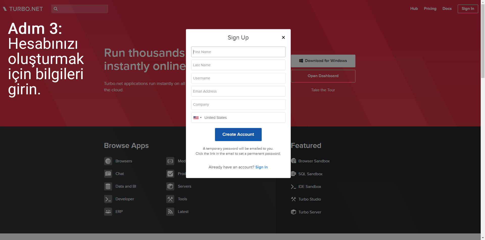
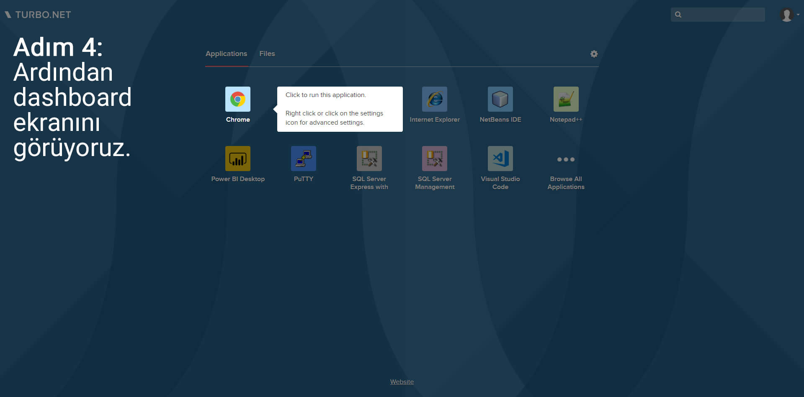
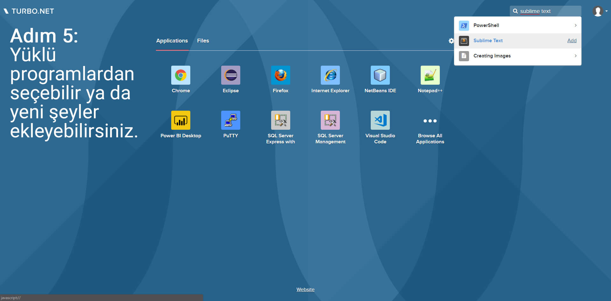
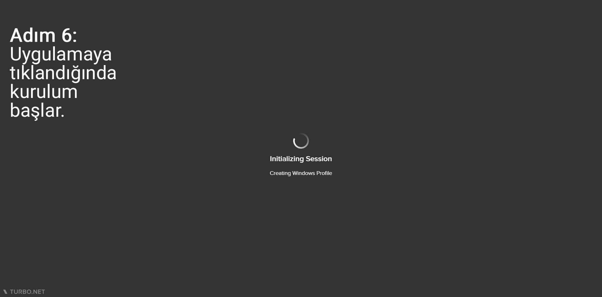
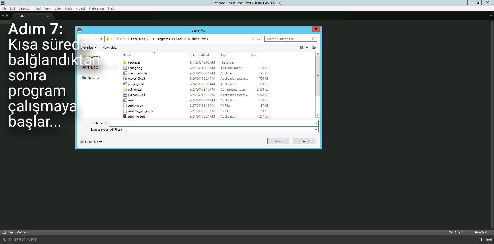
"Limit Yok klibi n’oldu?", şeytan diyo': "Bas tekmeyi!" - SERVER URAZ